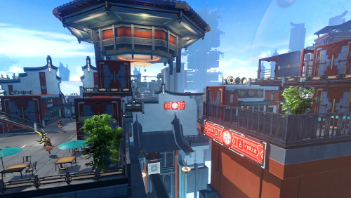
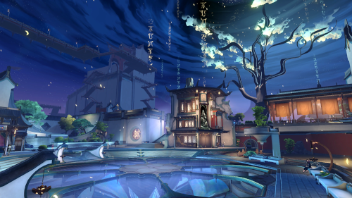
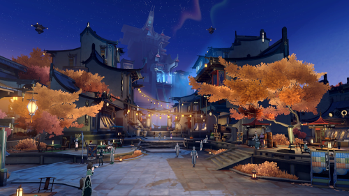
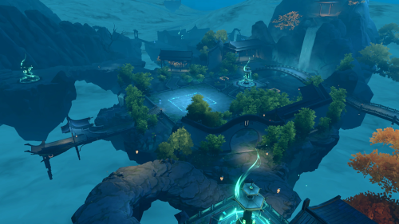
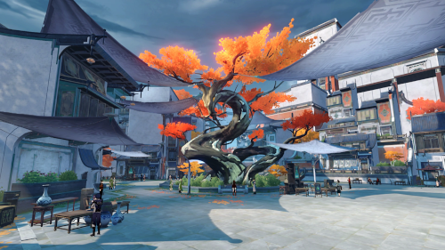
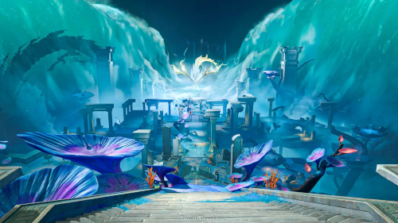
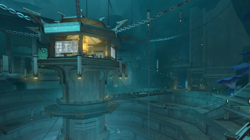
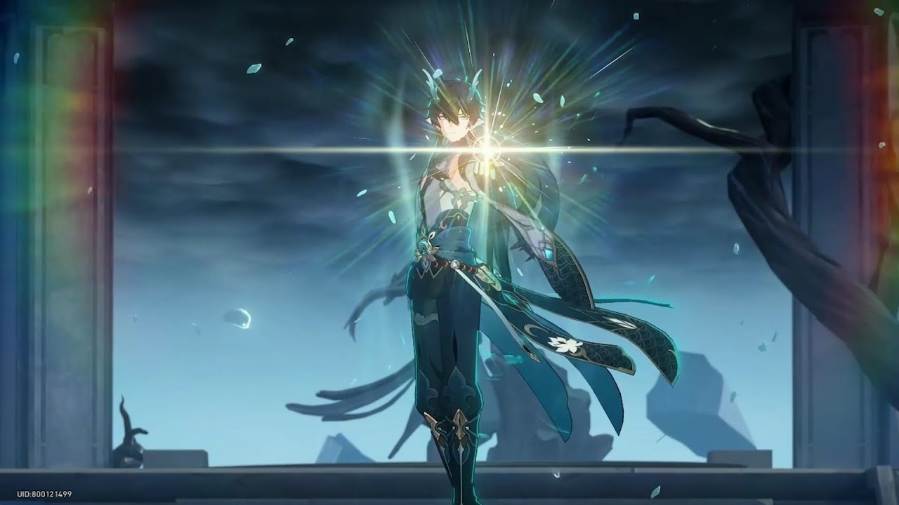
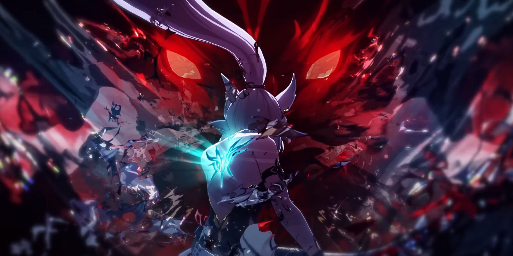

The Astral Express crew arrives at the Xianzhou Luofu, a massive starship following the Path of the Hunt. Initially, the Luofu's leadership, led by General Jing Yuan, is reluctant to accept external help. However, after a series of events, including the defeat of Stellaron Hunter Kafka, the crew gains the trust of the Xianzhou Alliance. Dan Heng's true identity as the reincarnation of the Vidyadhara elder, Dan Feng, is revealed, leading to his formal acceptance back into the Luofu.

Phantylia, a Lord Ravager of the Antimatter Legion, infiltrates the Luofu by assuming the identity of Tingyun, a prominent figure. She manipulates factions within the Luofu, including the Disciples of Sanctus Medicus, to sow discord and revive the Ambrosial Arbor, aiming to initiate internal collapse. The Trailblazers confront Phantylia, culminating in a battle where Dan Heng, in his Imbibitor Lunae form, plays a pivotal role in her defeat.
Following Phantylia's defeat, she adopts the alias "Mangas" and orchestrates the liberation of Hoolay, a Borisin Warhead Lord imprisoned in the Shackling Prison. Utilizing the Borisin's shapeshifting abilities, she facilitates a jailbreak, leading to Hoolay's escape. The Trailblazers, alongside the Xianzhou forces, track down Hoolay, culminating in a confrontation where his true intentions and the broader implications for the Luofu are unveiled.

The powerful Vidyadhara form of Dan Heng, Imbibitor Lunae embodies the strength and legacy of his past life as Dan Feng. Awakened during the crisis on the Xianzhou Luofu, this transformation grants him immense draconic power and control over water-based energy, making him a key figure in the battle against Phantylia.
Fu Xuan is the meticulous and resolute Master Diviner of the Xianzhou Luofu’s Divination Commission. Gifted with clairvoyant abilities, she uses the Matrix of Prescience to foresee potential threats and guide strategic decisions. Despite her strict demeanor, she is deeply committed to the safety of the Luofu and often takes on burdens others cannot.
Once the charismatic Foxian envoy of the Xianzhou Luofu, Tingyun was revealed to have been possessed and replaced by the Lord Ravager Phantylia the Undying. Under this guise, she manipulated events from the shadows, orchestrating chaos aboard the Luofu. Though the real Tingyun's fate ended in tragedy, her false persona—"Fugue"—remains a haunting reminder of deception and lost trust.
General of the Xianzhou Luofu’s Cloud Knights, Jing Yuan is a brilliant tactician known as the “Dozing General” for his calm and composed demeanor. Beneath his laid-back attitude lies a sharp mind and immense power, honed through centuries of battle. As a leader, he balances patience with decisiveness, guiding the Luofu through internal unrest and external threats with unwavering resolve.
Once the sword master of the Xianzhou Luofu and mentor to Jing Yuan, Jingliu fell to mara—a madness born from immortality. Though she was once a revered figure, her descent led to exile and tragedy. Now a wandering blade tainted by her past, Jingliu walks a path between clarity and corruption, seeking meaning in the wake of everything she lost.
A prodigious swordsman and the youngest lieutenant of the Cloud Knights, Yanqing serves directly under General Jing Yuan. Despite his youth, he possesses remarkable discipline, loyalty, and swordsmanship far beyond his years. Devoted to his duties and eager to prove himself, he strives to protect the Xianzhou Luofu and uphold the honor of the knights.